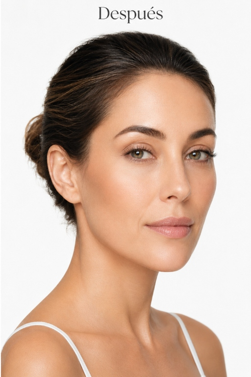
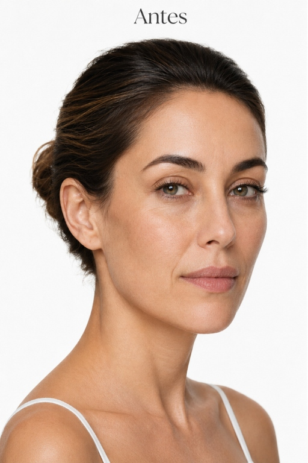
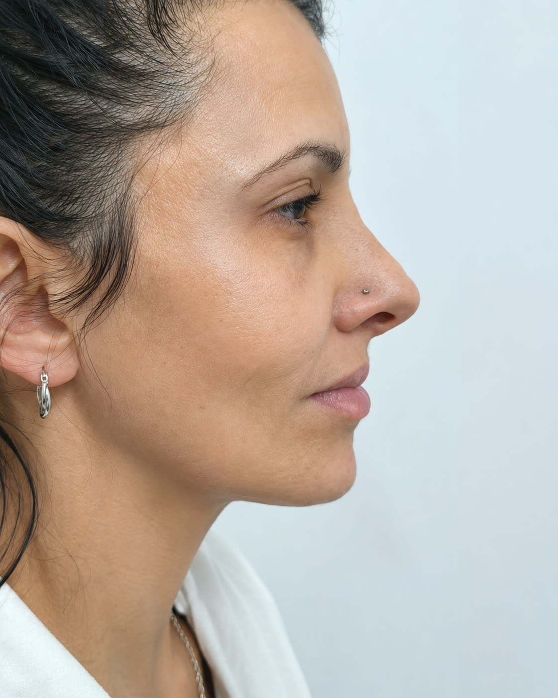
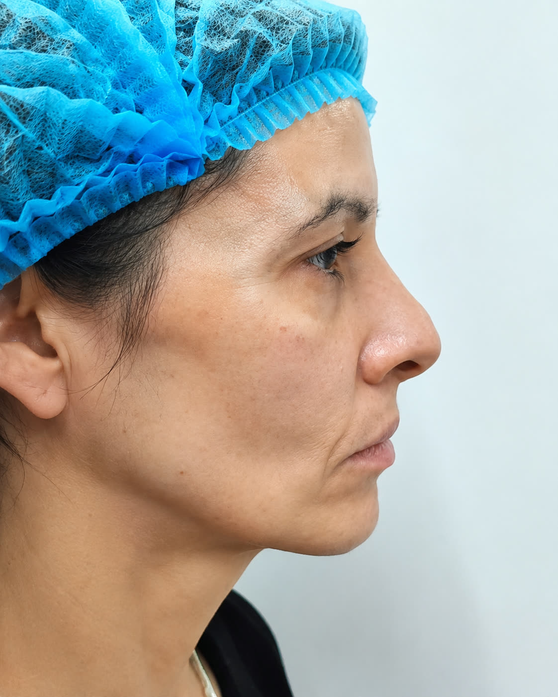

Botox 3 zonas + NCTF o PDRN de salmón
599USD
Valoración previa, indicación médica y seguimiento de la evolución.
Medicina estética regenerativa
Tratamientos faciales, capilares y corporales con valoración médica previa en Montevideo y Maldonado.
Técnica avanzada que rejuvenece, redefine pómulos y línea mandibular, y mejora el soporte facial sin alterar tu expresión natural.


"No se trata de cambiar rasgos. Se trata de indicar solo lo que corresponde."
Dra. Luisa Cedeño
Cada tratamiento parte de una valoración médica. La prioridad es cuidar tu salud, sostener la naturalidad y elegir procedimientos que tengan sentido para tu caso.
Cada rostro y cada piel necesitan una evaluación diferente. Por eso, los tratamientos se indican de forma personalizada, buscando resultados naturales, seguros y armónicos.
El objetivo no es borrar la expresión. Es mejorar proporción, textura o descanso facial sin perder naturalidad.
Los resultados pueden variar según cada paciente y requieren valoración profesional.


Perfil facial. Definición de contorno y descanso facial manteniendo la naturalidad del perfil.
Botox 3 zonas + NCTF o PDRN de salmón
599USD
Valoración previa, indicación médica y seguimiento de la evolución.
Promo 8 zonas NCTF o PDRN
599USD
Para trabajar hidratación, textura y luminosidad con un plan por etapas.
Coordinación con cita previa por WhatsApp.
Agenda con cupos definidos según semana.
Lo básico antes de escribir.
Te respondemos por WhatsApp para orientar tratamiento, sede y próximo cupo.